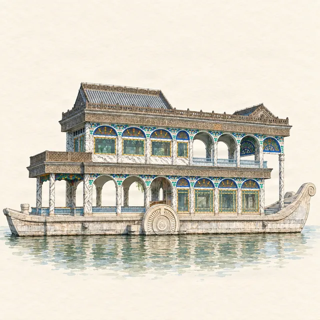

Summer Palace · highlight
The Marble Boat: the stone boat that never sails
Last checked:

What is the Marble Boat?
It is a waterside pavilion in the shape of a boat, at the west end of the Long Corridor: a stone hull completed in 1755, with a two-storey cabin on top that was rebuilt in a Western style in 1893. It has never moved. Its Chinese name, Qingyan Fang (清晏舫), means "boat of clear and peaceful seas".
Why build a boat that cannot sail?
A stone boat was a garden folly with a message. A well-known saying compares a ruler to a boat and the people to the water: water can carry a boat, and water can overturn it. A boat made of stone could never capsize, a wish for a dynasty that would last. It was also simply a fine place to sit, take tea and look out over the lake.
Why does the cabin look European?
The original cabin was Chinese in style. It was burned in 1860, when British and French troops destroyed the imperial gardens around Beijing. When Empress Dowager Cixi rebuilt the Summer Palace in the 1880s and 1890s, the cabin was redone in a Western style, with coloured glass, arched windows and paddle wheels on the sides, painted to look like marble. The result is a curious mix: an eighteenth-century Chinese hull carrying a late-nineteenth-century European steamer's deck.
Was it paid for with navy money?
That is the most famous story about it. Historians agree that funds meant for the navy were diverted to rebuild the Summer Palace in the 1880s, a few years before China's fleet was destroyed in the war with Japan in 1894–95. The Marble Boat has become the symbol of that story, though it was only one small part of the work.
What should I look for?
- The contrast between the heavy stone hull and the light, glassy upper rooms.
- The paddle wheels on each side, a nod to the steamships of the 1890s.
- The carved stone details of the hull, from the original 1755 boat.
- The view east from the shore beside it, back along the lake toward Longevity Hill.
How do I get to the Marble Boat?
Walk the full length of the Long Corridor west from the East Palace Gate, about 25–30 minutes without stops, or come in by the North Palace Gate (Beigongmen station, metro Line 4) and walk down past Suzhou Street and over the hill, about 15–20 minutes. In the boating season, a ¥40 boat runs from beside the Marble Boat to South Lake Island.
Is it included in the ticket?
Yes, it is in the open park, covered by the basic park ticket (¥30 or ¥20 depending on the season).
What is nearby?
The Long Corridor, whose painted beams end here (see the stories behind the paintings), and the West Causeway with its six bridges. Penyola's Summer Palace map has the Marble Boat as a stop with an illustrated story, on the one-day route round the lake.
More planning guides
Sources
Checked on these official pages on 9 November 2026: